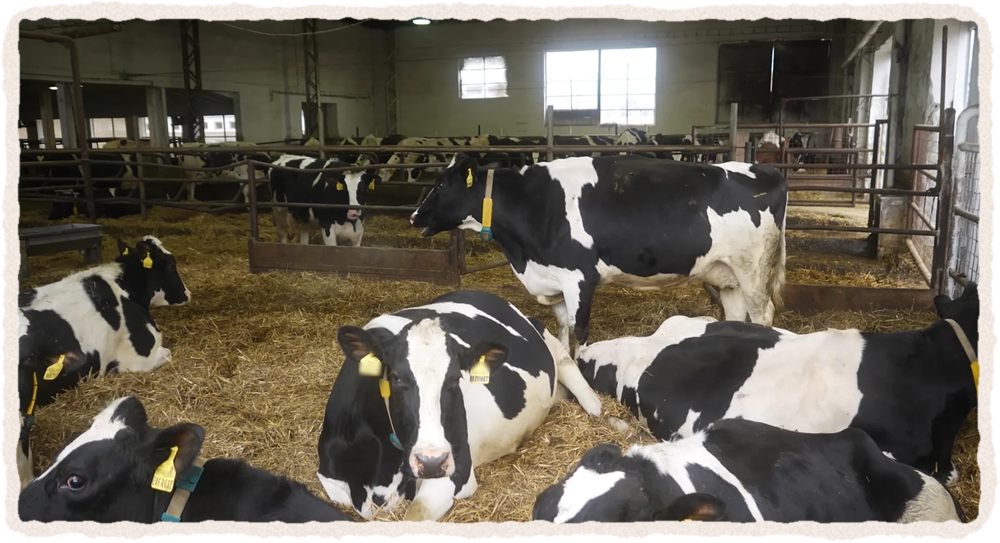
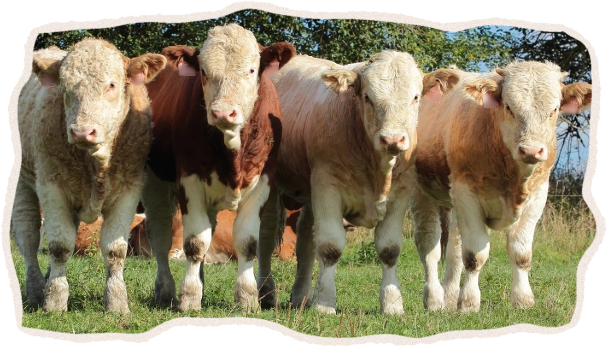
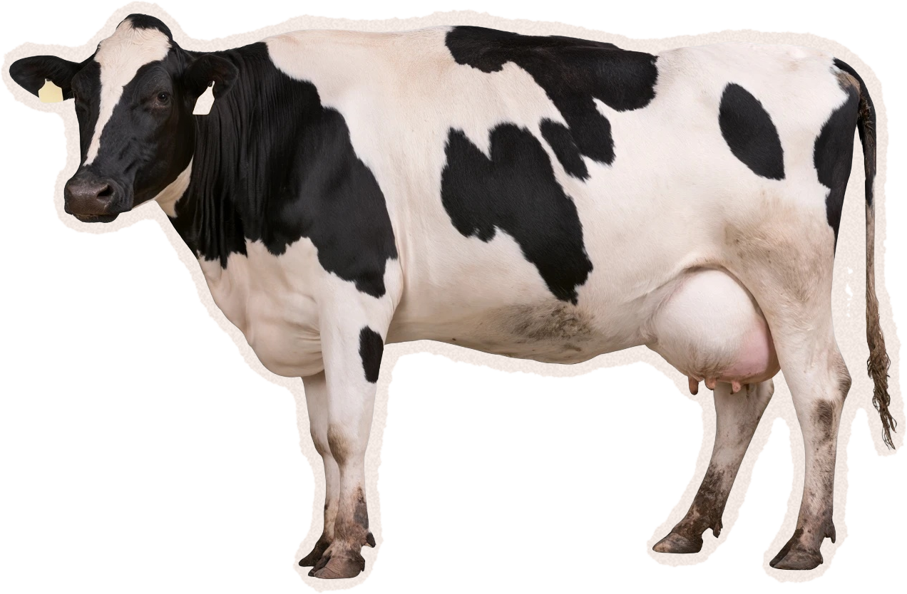

Hospodářská zvířata váží30× víc než všichni divocí savci na souši.

Ilustrační záběr
Co to dělá s planetou? →
Zdroj: Greenspoon et al. 2023, PNAS (hmotnost, ne počet kusů)
Jídlo tvořítřetinu všech skleníkových plynů, které lidstvo vypouští.
34 %
jídlood pole po talíř
všechny emise lidstva, rok 2015
Zdroj: Crippa et al. 2021, Nature Food
Samotný chov zvířat =12 %všech emisí lidstva.
12 %
chov zvířat
včetně pěstování krmiv a zpracování data z roku 2015
1 čtvereček = 1 % emisí
Zdroj: FAO 2023, Pathways towards lower emissions (model GLEAM)
Chov skotu pro maso i mléko =62 %emisí z chovu zvířat.

Ilustrační záběr

maso
mléko
Zdroj: FAO 2023, Pathways towards lower emissions (model GLEAM) – skot 3,8 Gt CO₂e ročně, data z roku 2015
Česko · obilí spotřebované doma · 2024/25
V Česku jde víc obilí zvířatům než lidem.
2,27 mil. t
2,06 mil. t
48 %
43 %
krmiva
potraviny
Zdroj: MZe – Situační a výhledová zpráva Obiloviny 2024/2025
Maso, mléko, vejce a ryby z chovů
Zabírají83 % půdy, dávají jen 18 % kalorií a 37 % bílkovin.
zemědělská půda světa
83 %
kalorie v jídle
18 %
bílkoviny v jídle
37 %
živočišné potraviny
rostlinné potraviny
Zdroj: Poore & Nemecek 2018, Science · svět, data kolem r. 2010 · ryby jen z chovů
Pro kolik lidí vystačí 100 kgrostlinných bílkovin?
1 kostička = 10 kg bílkovin
Sníme je sami
Nejdřív je sní prase
zbytek skončí ve výkalech a moči
10 lidí
nanejvýš 3 lidé
Zdroj: Pomar et al. 2021, Frontiers in Veterinary Science – prase uloží do těla jen 15–33 % bílkovin z krmiva (ze 100 kg tedy 15–33 kg). Kostičky jsou zjednodušení.
I tanejšetrnější živočišná výroba má obvykle větší dopad než rostlinné alternativy.
Nejšetrnější živočišné
Rostlinné alternativy
Zdroj: Poore & Nemecek 2018, Science · data z 38 700 farem
Strava veganů: čtvrtina emisí a čtvrtina půdy.
100 %
25 %
100 %
25 %
emise
půda
100 g masa a víc denně
vegani
Zdroj: Scarborough et al. 2023, Nature Food · britská studie, 55 504 lidí
Rostlinná strava: lehčí pro planetu i pro zvířata.